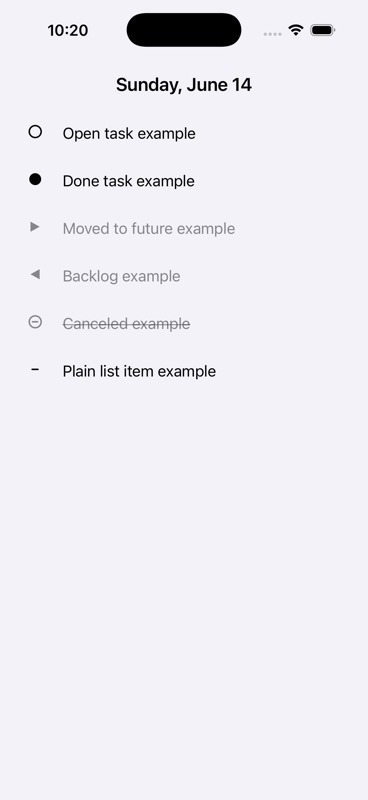
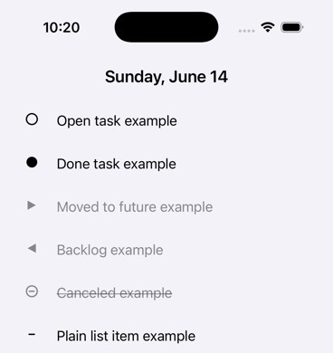

Open
A thing still trying to become done. Brave. Annoying. Necessary.
- [ ] book dentist
rivene is a fast daily log for iPhone and Apple Watch. Speak it, type it, check it off, move it, backlog it, cancel it, or leave it as a detail. The interface handles the tap dance. The file stays yours.
Get launch updates
Capture first. Sort later. Or do not sort at all, a shocking act of personal freedom. Today stays a real record of what happened.
Done things stay visible. Moved things stay explainable. Canceled things stay dead. Details stay attached. The text underneath is ordinary Markdown, not a mystery vault with a support address.

Tap, speak, edit, move, cancel. rivene keeps rewriting normal Markdown task lines underneath, so your planner remains portable instead of becoming expensive vapor with tabs.
- [ ] open task
- [x] done task
- [>] moved forward
- [<] backlogged
- [-] canceled
- plain detail